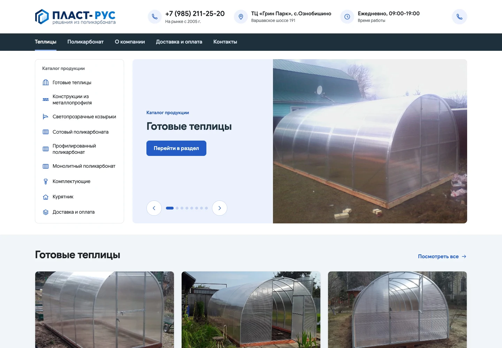
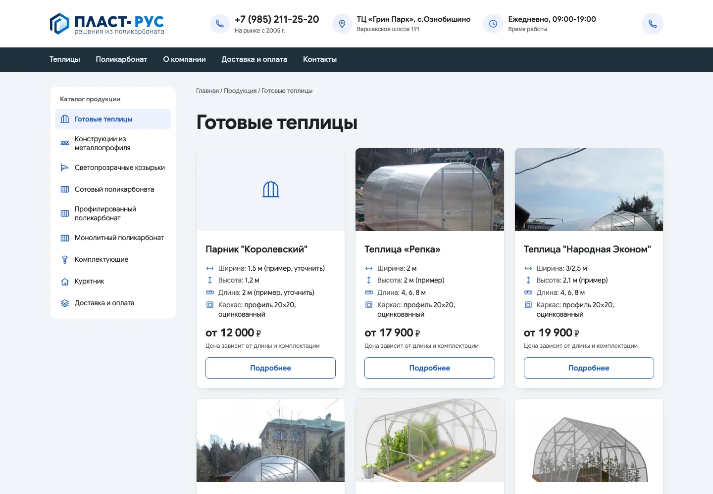
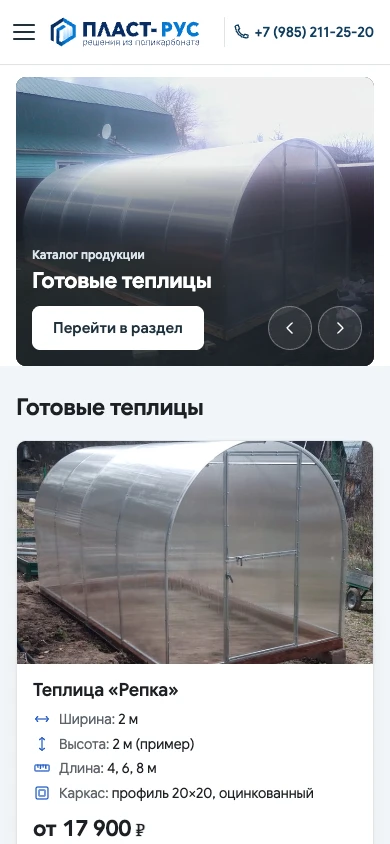
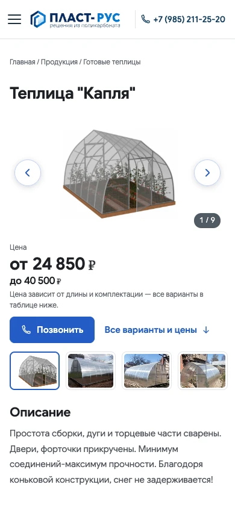
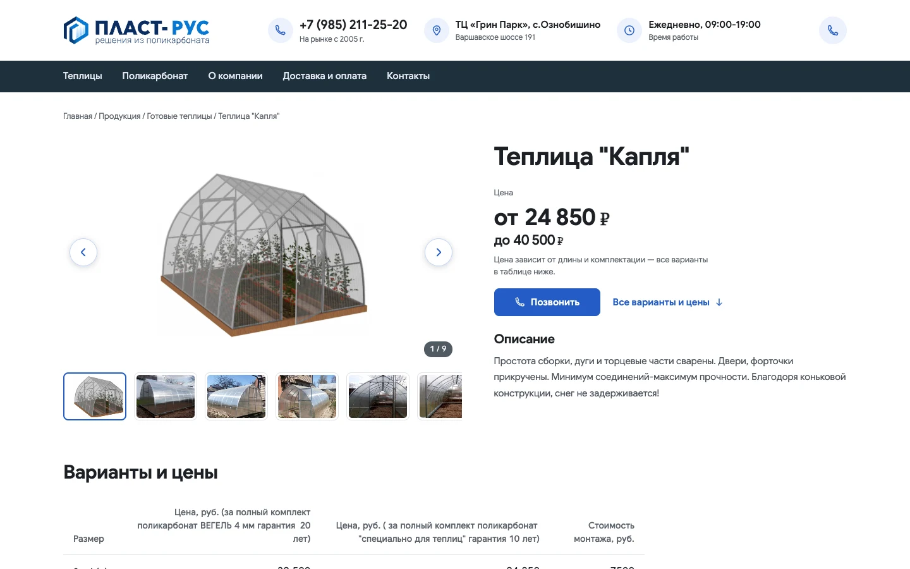
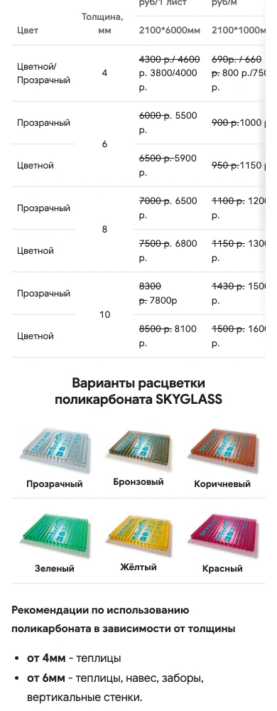

Plast-Rus
Updated design on the existing CMS
Adapted the design for a dealer’s website: responsive homepage, catalog, product pages and price list. Kept its products, prices, contacts and familiar CMS, and restored the logos in SVG.
Open plast-rus.ruWhat the client got
- Easy to use on a phoneResponsive header, menu and product cards. Wide tables scroll inside their container instead of widening the page.
- Prices and specifications in the catalogEach card shows a starting price and key details. Greenhouses are ordered by starting price.
- Their own data and familiar CMSThe dealer’s products, prices, text and contacts are preserved. The website still runs on the same DIAFAN.CMS.
- Logos from the original artworkPrepared SVG files for the header and footer, keeping the brand artwork and tagline.
Website screens
Click a screenshot to view it full size
Homepage and catalog


The Maxi-Plast design was adapted to the dealer’s own categories, products, prices and contacts.
Phone


The main actions are accessible on a narrow screen: open the menu, view a product and call.
Product page

Gallery and price alongside the description; options and detailed prices stay on the same page.
Price list

The original price-list content is preserved. Wide tables scroll inside their own container.
Screenshots of the live website, November 11, 2026. Mobile views use a simulated 390 px viewport. The client website is in Russian.
Checks before launch
Checked the design on a staging copy and prepared a backup and rollback path. After launch, checked the live pages, navigation and preserved data.
- Staging copy
- Backup
- Post-launch checks
- 27
- public URLs checked, including a real 404
- 11
- greenhouse product pages: prices and descriptions preserved
- 3
- viewport widths: 320, 390 and 1280 px
Acceptance checks from November 5, 2026. Viewport widths were tested in Safari on a Mac, not on physical phones.
Published November 5, 2026 · code in a private repository